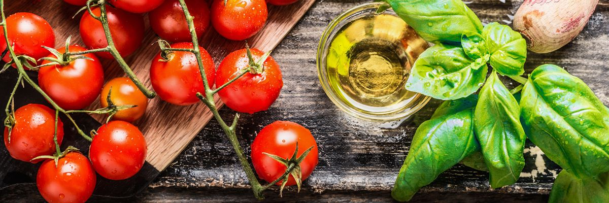
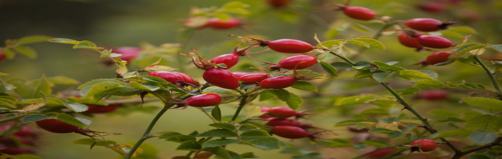
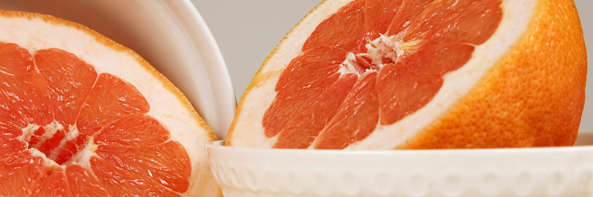
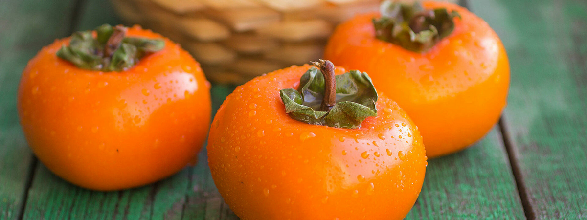
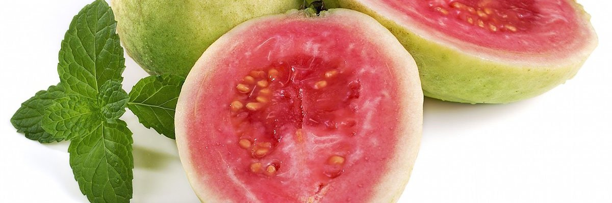

Ликопин — каратиноид, придающий плодам и растениям красную и оранжевую окраску. Чем ярче цвет, тем выше концентрация ликопина. Это уникальное вещество. Ликопин мощнейший антиоксидант, который предотвращает старение клеток и обладает антиканцерогенным эффектом. Человек получает это вещество из растительных продуктов красного или оранжевого цвета.
Помидор — рекордсмен по содержанию ликопина. В 100 гр. свежих плодов содержится до 20 мг. этого вещества. В томатной пасте и кетчупе в десятки раз больше.

Плоды шиповника также содержат ликопин. Именно он придает ягодам оранжевую окраску.

Этот фрукт содержит до 4 мг. ликопина на 100 гр. продукта. Кроме того, в грейпфрутах содержится множество других веществ, что делает этот цитрус необычайно полезным.

Еще один фрукт ярко-оранжевой окраски. Содержание ликопина в хурме доходит до 4,5 мг на 100 гр. Содержание вещества выше в перезревших, мягких плодах.

Эти экзотические плоды встречаются на российском рынке намного реже, чем другие фрукты. Содержание ликопина в гуаве доходит до 2,9 мг на 100 гр.

Важно понимать, что ликопин жирорастворимое вещество, поэтому он лучше усваивается при добавлении какого-нибудь масла. Например, можно делать салаты из свежих помидоров и красных перцев. Небольшая порция такого салата поможет восполнить суточную норму ликопина.
Важно: при медленном тушении или уваривании концентрация ликопина в продуктах возрастает в десятки раз. Например, в томатной пасте.
Друзья, помните, что организм каждого человека индивидуален. Поэтому информация на сайте носит исключительно информационный характер и не предназначена для постановки диагнозов или самолечения.
Никаких прав на этом сайте нет, сайт был создан студентом группы ИСП-931 (Власов К.А.) и сайт несет только информационно-познавательную цель!
©2021
Кстати, я есть в Instagram